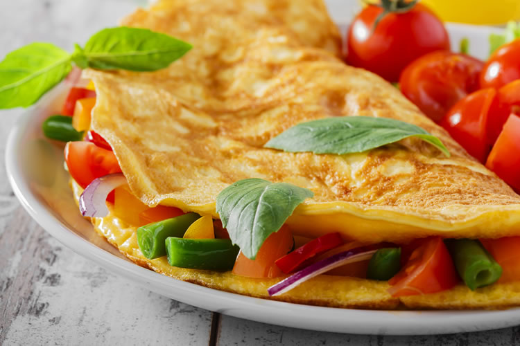

Omlette recipe

| Ingredient |
Amount |
| Eggs |
3 pcs |
| Cherry tomatoes |
5 pcs |
| Grated cheese |
2 tablespoons |
| Butter |
1 tablespoon |
- step
Prep the eggs:
In a bowl, beat the eggs with a fork.
- step
In an 8-inch nonstick skillet over medium-low heat, melt the butter.
Add the eggs to the skillet and cook without stirring until the edges begin to set. Push the edges toward the center of the pan and tilt the pan so the uncooked eggs move to the edge.
- step
Place the cheese, tomatoes, and herbs in a line down the center of the omelette and cook for about 1 minute longer, or until the eggs are mostly set but still a little soft in the center.
- step
Tilt the pan over a plate and use the spatula to nudge it onto the plate. Voila!